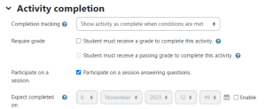

KUET grading
To send a grade to the gradebook, the activity must be graded and at least one graded session must have ended.
Aggregation follows the method chosen for the activity. Podium rewards accuracy and speed; inactive and race modes use question scores without a speed bonus. Groups use the same calculation, with all members receiving the same grade.
Grading KUET: choose an assessment strategy, decide which sessions count and understand the final grade.

Activity completion
The “Participate in a session by answering questions” condition marks the activity complete when a student has participated and answered questions in a session.
